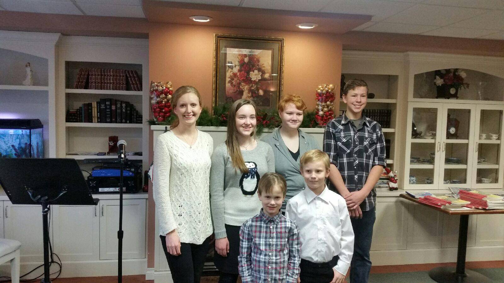

With more than 4 years of experience as a professional music teacher, Sydney Victor can help you train the only musical instrument you were born with--your voice! Whether you want to become a better public speaker, or whether you want to train your singing voice, with proper training and practice, Sydney can help you accomplish your goals!
Lyric Soprano, Sydney Victor, grew up in the Salmon Arm area. She studied piano from a young age but realized it was voice she wanted to pursue at university and now holds a Bachelor of Music Degree in Voice Performance from Bob Jones University in SC, USA. After university she also completed the ARCT program in Piano Performance through the Royal Conservatory of Music. She now lives on Vancouver Island and teaches in the Langford area. Her goal with each of her students is to teach them healthy technique while also having fun! She loves exploring composing and arranging with anyone willing to give it a go, and enjoys teaching all ages from beginner to advanced.